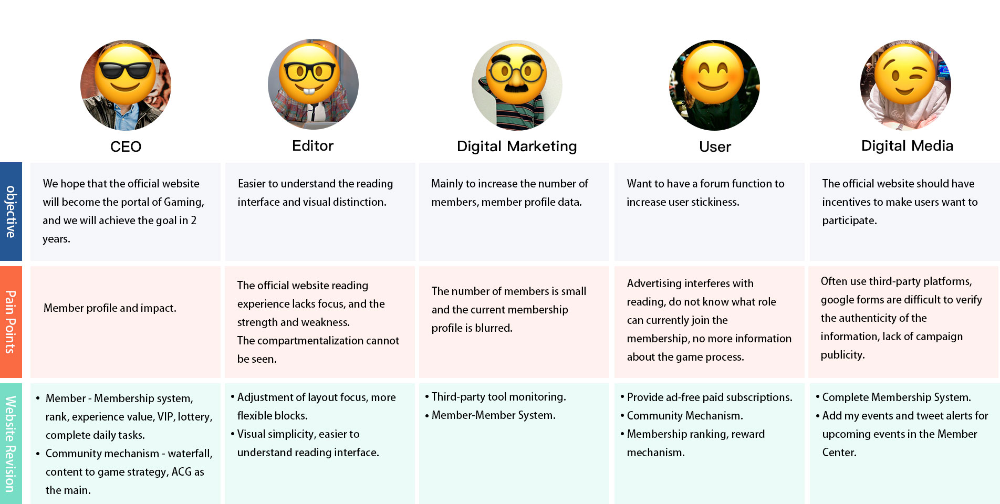
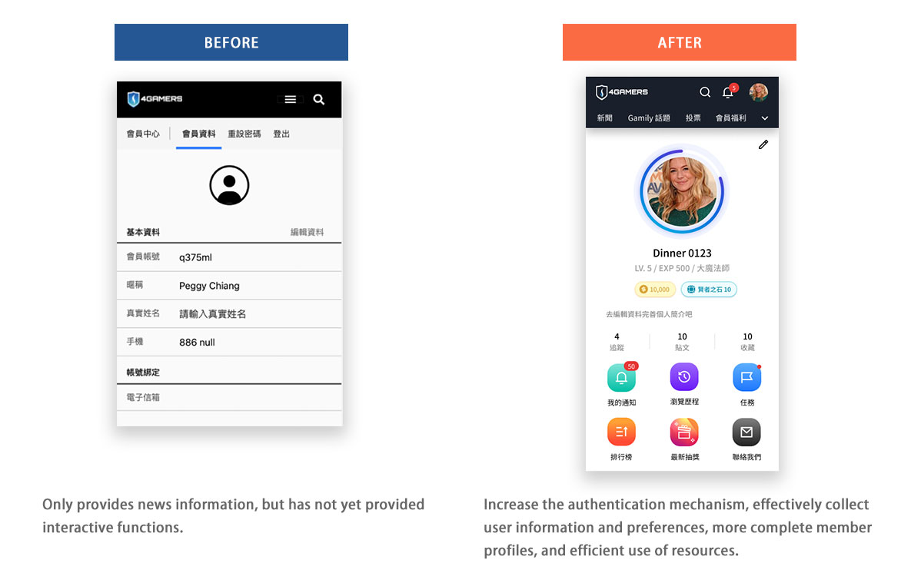

4Gamers - Official Website Revision
UX Research・UI System Building・Prototype

Project Details
Goal －
Create a community with gamified experience and content interactivity, increasing the number of user members on the official website. Personalize the service settings, increase member participation through interactivity and rewards, and make the whole website more active to form an ecosystem.
Challenge －
Build team trust, create consistency on the interface according to the experience of different devices, read the interface more intuitively, design usability and enhance the commercial value of each page. Understand the needs and goals of each stakeholder, collect and sort according to user pain points, apply the data collected internally and externally to the design of this revision, and conduct external testing and iteration after going online.
The Problem －
Build trust by conducting interviews with stakeholders to understand the goals of internal users.
- Single delivery of information, lack of interaction with members.
- Enhance the business value of the layout.
- A more comfortable and intuitive way to read, the current website lacks focus.
- The outline of members is blurred, and the number of members cannot be increased.
- Ads interfere with reading, and users do not know that membership has other purposes. 
Role －
Senior UI/UX designer.
- Conducting interviews.
- Finding user insight.
- Paper and digital wire-framing.
- Low and high-fidelity prototyping.
- Conducting usability studies and accounting for accessibility, iterating on designs.
- Determining information building, and responsive design
User Research Program －

User Persona －


-
USER INSIGHTS
- Functionality - In addition to gaining progress in gameplay, you want to achieve progress in social interaction.
- Social side - the reader feels the resonance of the content and reaches a certain aspect of belief and central idea.
- Emotional side - the goal-oriented game experience is to meet social expectations.
-
OPPORTUNITY
- Community mechanism gamification of experience and promotion of good content and subgroups.
- Have resonant content to increase emotional expression, enhance interactivity and attract hidden users.
- Consistent user experience, in addition to the responsive design for different devices, increase the mobile app download and increase the path according to different user habits.
Design Goal － Combining the above and converging results
- The main goal - increase the number of users on the official website.
- Visual interface - simple, easier to read interface, advertising space optimization to enhance the value of advertising.
- Interactive conversion - limited time anonymous chat, voting, message and member interactive content to increase interest.
- Personalized service setting - member system, member profile data.
- Gamification mechanism - reward mechanism to increase user stickiness.
Starting the design
-
Sketch - Concept ideas are drawn
-
Wireframe

Mobile and PC, check layout position the same experience and review design with stakeholders by the read and use.
-
Refining the design
- Card type layout:
Within a limited range, people can easily read and understand the information content, pictures, main titles, description text, buttons, etc., the arrangement and structure levels should be clear and flexible in application and layout. - Mobile:
The menu is like an APP application, and the TobBar function key was added at the bottom of the original webpage to use the webpage like an application painless conversion.

Mockups - Responsive design for different device
- Card type layout:
Design solution - Before & After
INDEX
-
Front-page:
planning important services and optimizing existing projects, giving users more clues to choose from,increasing stay and conversion. -
Function:
Voting, topics, and e-commerce interactivity are increased, and the social interaction between functions and visuals is more emotional, increasing user stickiness. -
Special topics:
Technology hardware, special areas, the original vision is difficult to show consistency. -
Member
Personalized settings, high integrity of user data, better understanding of user profiles.  -
Gamification mechanism:
production, use, consumption, interactive membership mechanism, to create an economic system within the site.
UI guideline
Define fonts, colours, and components in assets.


Prototype
Questionnaire survey after product launch
Collect qualitative and quantitative data and user feedback for the next revision.


Results
Continuously loading content, the overall traffic increased by more than 20%, helping editors solve long-term difficulties.
Gamification mechanism: Combined with tasks, the number of members has increased from 10,000 to more than 70,000 at present, and continues to increase.
I am grateful that I had this great opportunity to implement my design in this project, I learned a lot, especially applying what I learned to real-world applications on projects and showing people, prototyping for users and ourselves The solution to this problem is transparency, collaboration, and efficiency across teams.